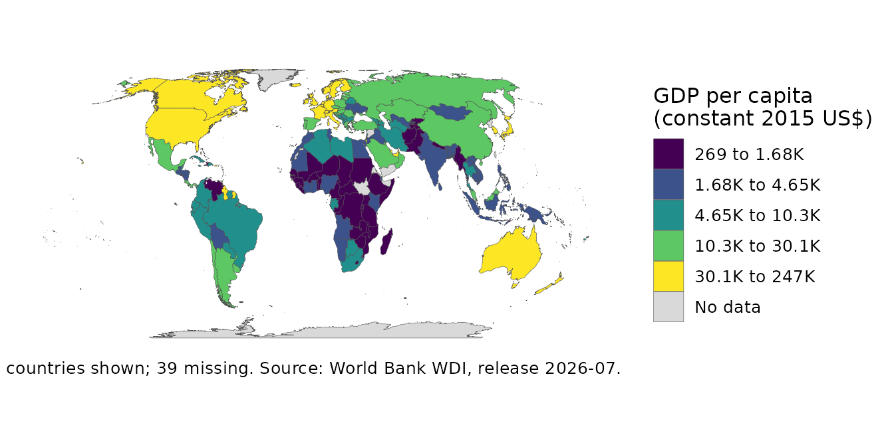

Data you can trace: sources, vintages and provenance
Source:vignettes/data-you-can-trace.Rmd
data-you-can-trace.RmdA number on a map is only as good as the answer to “where did it come
from?” Which provider, which series, in what unit, from which release,
fetched when. countryatlas records all of that with the
data, carries it through the verbs that reshape a frame, and prints it
on the map. This vignette runs offline: the network calls are shown but
not run.
Every column knows its source
The bundled snapshot was fetched from the World Bank, and says so:
snap <- world_snapshot$countries
source_info(snap)[, c("column", "indicator", "unit", "vintage", "licence")]
#> # A tibble: 6 × 5
#> column indicator unit vintage licence
#> <chr> <chr> <chr> <chr> <chr>
#> 1 gdp_per_capita NY.GDP.PCAP.KD constant 2015 US$ 2026-07 CC BY 4.0
#> 2 population SP.POP.TOTL NA 2026-07 CC BY 4.0
#> 3 life_expectancy SP.DYN.LE00.IN years 2026-07 CC BY 4.0
#> 4 co2_per_capita EN.GHG.CO2.PC.CE.AR5 t CO2e/capita 2026-07 CC BY 4.0
#> 5 income wb_income NA FY2024 CC BY 4.0
#> 6 region wb_region NA FY2024 CC BY 4.0The record travels with the column through joins, filters and
geometry, and the map verbs read it. With the default
footnote = "auto", the caption names the source and the
release:
p <- world_map(attach_geometry(snap), gdp_per_capita)
p
map_provenance() says the rest, and
map_citation() lists the references for exactly what this
map used:
map_provenance(p)
#>
#> ── countryatlas map provenance
#> package: countryatlas 3.0.0 (snapshot 2024)
#> fill: gdp_per_capita
#> geometry: polygon backend, equal_earth
#> classification: quantile, 5 bins
#> missing data: grey
#> coverage: 199 countries shown, 39 missing
#> breaks: 268.7 | 1684 | 4655 | 10250 | 30130 | 247200
#> data: World Bank WDI NY.GDP.PCAP.KD (constant 2015 US$), release 2026-07,
#> fetched 2026-10-02
map_citation(p)[1:2]
#> [1] "World Bank WDI (2026). \"GDP per capita (constant 2015 US$).\" Series\nNY.GDP.PCAP.KD; release 2026-07; accessed 2026-10-02; licence CC BY\n4.0."
#> [2] "Natural Earth (2024). _Natural Earth: Free vector and raster map data_.\nNatural Earth. Version 5.1.1, 1:50m admin-0 countries; public domain,\n<https://www.naturalearthdata.com/>."Fetching with the record attached
Every fetcher attaches the same record. These need the network, so they are not run here:
d <- world_data(2020, c(life_exp = "SP.DYN.LE00.IN")) # World Bank
o <- fetch_indicator("owid", "life-expectancy") # Our World in Data
w <- fetch_sdmx("imf", "WEO", key = "NGDP_RPCH") # any SDMX provider
source_info(d)Pinning a release
The World Bank revises old values in every release: GDP for 2015 is not the same number in the July 2023 and July 2024 releases. For a result that must reproduce, pin the release, and see what changed between two of them:
wdi_vintages() # the releases on record
world_data(2015, vintage = "2024-07") # this release, every time
compare_vintages("NY.GDP.PCAP.KD", c("2023-07", "2024-07"), year = 2015)Your own source, on the same footing
register_country_source() puts any data you can read
behind the same verbs. A fetcher that states its unit gets that unit
into the record:
survey <- function(indicator, countries = NULL, years = NULL) {
out <- data.frame(iso3c = c("FRA", "DEU", "JPN"), year = 2020L,
lfp = c(61.2, 62.8, 62.0))
source_info(out) <- data.frame(column = "lfp", source = "survey",
unit = "percent", vintage = "2021 wave")
out
}
register_country_source("survey", survey, meta = "A labour-force survey")
lfp <- fetch_indicator("survey", "lfp")
source_info(lfp)[, c("column", "source", "unit", "vintage")]
#> # A tibble: 1 × 4
#> column source unit vintage
#> <chr> <chr> <chr> <chr>
#> 1 lfp survey percent 2021 waveTwo sources, one indicator
compare_sources() lines two providers up on the ISO
spine. When they state different units, the difference is not a
disagreement, so the comparison is refused until you say otherwise:
shares <- function(indicator, countries = NULL, years = NULL) {
out <- data.frame(iso3c = c("FRA", "DEU", "JPN"), year = 2020L,
lfp = c(0.611, 0.629, 0.618))
source_info(out) <- data.frame(column = "lfp", source = "shares",
unit = "share")
out
}
register_country_source("shares", shares)
try(compare_sources("lfp", sources = c("survey", "shares"), year = 2020))
#> Error in compare_sources("lfp", sources = c("survey", "shares"), year = 2020) :
#> The sources state different units, so a difference between them is not a
#> disagreement.
#> • "survey: percent" and "shares: share"
#> ℹ Compare series in the same unit, or pass `allow_unit_mismatch = TRUE` to
#> compare anyway.